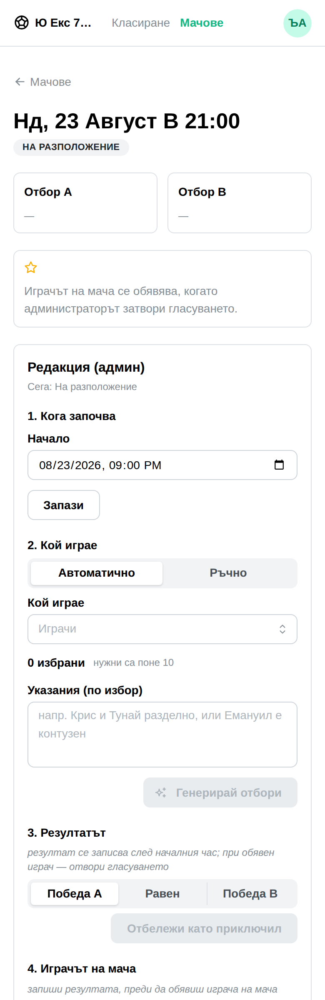
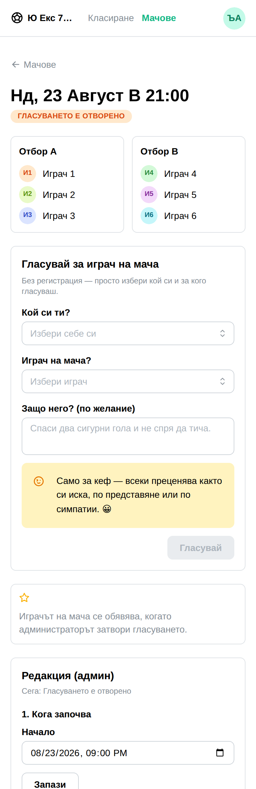
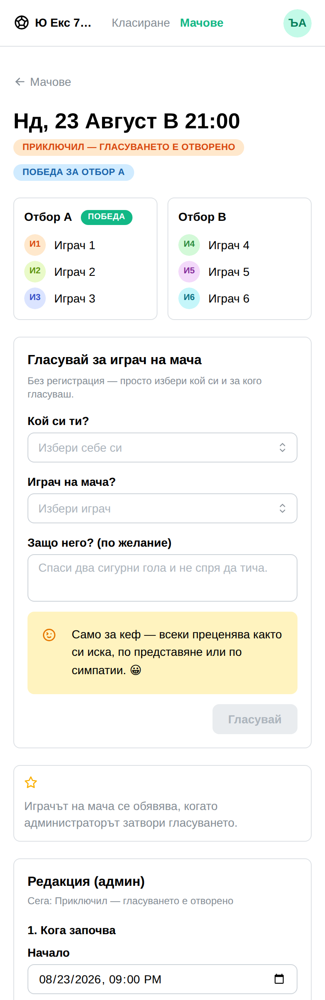
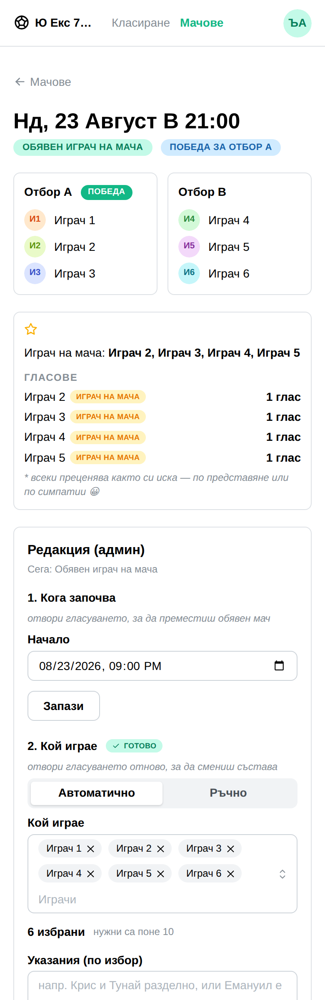

optimum-stars · match page · UX findings
I drove a match through its whole life — scheduled, sides named, kickoff passed, result, reveal — and measured what each admin action does to the table.
A real league on a real stack, 6 invented players, one game.
Nothing here is fixed yet. Findings and recommendations only.
01 no lineups phase "На разположение" blocked: result, reveal 02 sides named, 21:00 past "Гласуването е отворено" blocked: reveal 03 result recorded "Приключил — гласуването е отворено" blocked: nothing 04 ballot closed "Обявен играч на мача" blocked: delete, kickoff, lineups, result




What is already good, and worth not breaking. The admin box is a numbered 1–5 list with „✓ готово" on the steps that are done, and every blocked control is greyed with the server's own sentence above it — „отвори гласуването, за да преместиш обявен мач". One rule, one wording, no TypeScript copy of it. That is why the screen is confusing rather than broken.
„Отвори гласуването" is a plain button with no confirmation. Pressing it strips every man-of-the-match point from the standings for as long as it is open — and the table is public.
revealed И2:6 И3:6 И4:4 И5:4 И1:3 И6:1 after reopening the ballot И1:3 И2:3 И3:3 И4:1 И5:1 И6:1 after closing it again И2:6 И3:6 И4:4 И5:4 И1:3 И6:1
It is reversible, and the derivation is right — points come from a revealed ballot, so an open one has none to give. But an admin who reopens to fix a typo has meanwhile republished a wrong league table, and nothing told him.
Fix. Confirm before reopening, naming the consequence: „Докато гласуването е отворено, точките от анкетата изчезват от класирането." Cheap, and it is the only thing standing between a small correction and a wrong public table.
You were right that the sides stay editable after the match is finished. Measured — moving И3 from the winning side to the losing one:
before И3: 6 points (3 for the win + 3 for the ballot) after И3: 4 points (1 for the loss + 3 for the ballot) ← no warning, no confirmation
This is a legitimate correction — "он всъщност игра с другите" is a real thing to fix. It is also the only control on the page that changes a man's points as a side effect, and it looks exactly like the one you use before the match to set the sides.
Fix. Keep it editable, but once the match is finished make saving a lineup confirm and say what moves: „Мачът е приключил — смяната на състава променя точките на играчите." The phase is already known to the screen; it just is not used here.
Visible in shots 03 and 04: „6 избрани · нужни са поне 10", under a game that was played 3v3 and whose result is recorded. It is the AI team generator's rule (MIN_PLAYERS = 10) leaking into a context where it means nothing — and it reads as "this match is invalid".
Fix. The generator has no business on a played match. Hide it once the result is in, or at minimum drop the count and the threshold once match.finished.
useState("auto") — the mode is fixed regardless of phase. An admin opening a played match to correct one name lands on „Автоматично", finds „Генерирай отбори" greyed out, and has to discover „Ръчно" for himself.
Fix. Default to „Ръчно" when the line-ups already exist or the match is finished. The generator is for a match that has not been arranged yet.
type="datetime-local" is rendered by the browser in the browser's locale, not the app's. On this machine it reads 08/23/2026, 09:00 PM — month first, twelve-hour — in an app that is Bulgarian everywhere else and whose readers write 23.08.2026, 21:00.
Fix. Mantine's DateTimePicker with a Bulgarian locale, or keep the native input and print the parsed value beside it in Bulgarian so there is never doubt which number is the month.
„ПРИКЛЮЧИЛ — ГЛАСУВАНЕТО Е ОТВОРЕНО" is the longest thing on the screen and reads as two contradictory facts. It is repeated a second time inside the admin box („Сега: …").
Fix. Two short badges — „Приключил" and „Гласуването тече" — or keep the sentence in the admin box only, where it is an instruction, and shorten the public one.
Two separate acts both feel like "finishing the match": recording the score, and closing the ballot. After step 3 goes „✓ готово", nothing draws the eye to step 4 — which is the one that awards the podium points and publishes the write-up.
Fix. When the result is in and the ballot is still open, say what is outstanding where the admin is already looking — one line under step 3, or a marker on step 4.
Nothing here needs a schema change and nothing needs a migration. All of it is the match page and the team generator.